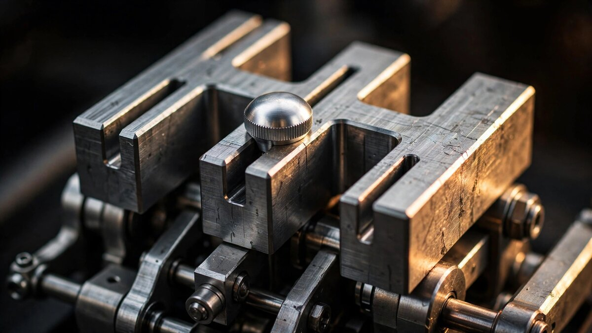

No Clutch Plate, No Synchros, No Mechanical Link: How Ferrari Engineers Haptic Deception into a Dual-Clutch Gearbox

Ferrari's last manual transmission left Maranello in 2013, bolted to the naturally aspirated V8 in the final California. For thirteen years, every prancing horse shifted itself. Paddle shifters and dual-clutch automatics were faster, more efficient, and categorically better at the job of changing gears. Nobody at Ferrari disputed that. But sometime around 2021, customer surveys started returning answers that performance data could not overrule: people missed the clutch pedal.
Building a new manual gearbox was not a realistic option. A bespoke six-speed strong enough to handle 678 Nm of torque from a 6.5-liter V12 at 9,250 RPM would require years of development, its own casting program, and an entirely different bellhousing. It would also be slower. Ferrari's existing eight-speed DCT already shifts in under 50 milliseconds. Any traditional manual would be an objective downgrade in every measurable dimension except one: the feeling of participation.
So Ferrari's engineers at Maranello did something unusual. They kept the gearbox and faked the rest. Five years of development produced the Manuale by-wire system, unveiled on July 3, 2026 in the 12Cilindri Manuale. An H-pattern gear lever sits in an open gate on the center console. A clutch pedal occupies the footwell alongside the brake and throttle. Neither component has any mechanical connection to the transmission. Every input passes through sensors and software before reaching the gearbox control unit. Haptic feedback comes from solenoids, springs, and machined steel mechanisms designed to feel like something they are not.
Limited to 1,499 units, a number that references the 1,499 cc displacement of Ferrari's first V12 engine in 1947, the 12Cilindri Manuale is simultaneously the most nostalgic and the most conceptually radical Ferrari in decades.
Inside the Gear Selector Block
At the center of the system sits a compact mechanical assembly that Ferrari designed from scratch. A central rotating block, machined from a single piece of high-strength steel, forms the structural core of the H-pattern gate. Unlike a traditional manual selector mechanism, which uses rods and forks to physically move synchronizer sleeves along a layshaft, this block does nothing to the gearbox. It exists solely to give the driver's hand something convincing to push against.
Eccentric rollers mounted within the housing enable self-centering. When the driver releases the lever in any gear position, these rollers guide it back to the neutral axis of the H-pattern. In a conventional manual, springs and detent balls handle this task by resisting fork movement along the selector rails. Ferrari replicated the same restoring force through roller geometry, tuning the return rate and resistance profile to match what a 599 GTB owner would remember from a decade earlier.
A push-pull solenoid provides gate resistance and locking. As the lever approaches a gate position, the solenoid generates a controlled magnetic force that simulates the detent click of mechanical engagement. Move the lever firmly, and it snaps into position with a metallic report. Try to select a gear that would over-rev the engine at the current road speed, and the solenoid locks the gate electronically, preventing the move before the ECU ever sees the request. In a traditional manual, brass synchro rings impose physical limits on mismatched gear selection. Here, software sets the boundary, and a solenoid enforces it.
Two Hall-effect angle sensors read the lever's position in real time. Unlike potentiometers, Hall-effect sensors have no physical contact points and do not wear over time. Redundant sensing eliminates single-point failure: if one sensor drifts, the control unit falls back on the other and flags a diagnostic code. Position data feeds the DCT control unit, which maps lever angle to one of six forward gear selections, reverse, or neutral.
Clutch-by-Wire: A Pedal Connected to Nothing
In a traditional manual, pressing the clutch pedal pushes hydraulic fluid through a master cylinder to a slave cylinder mounted on the gearbox bellhousing. Hydraulic pressure disengages a pressure plate, releasing the friction disc from the flywheel. Release the pedal, and spring force clamps the disc back against the flywheel, transferring engine torque to the input shaft. Every component in that chain is mechanical, hydraulic, or both.
Ferrari's clutch pedal is connected to a profiled rotating drum machined from high-strength steel alloy. As the driver depresses the pedal, the drum rotates against a preloaded spring system that generates progressive resistance across the pedal's travel arc. Early travel feels light. Mid-travel builds substantial pedal weight that peaks near the simulated bite point. Continued depression lightens the load past the bite point, mimicking the characteristic feel of a diaphragm spring clutch as the release bearing passes the fulcrum of the spring fingers.
An electronic torque motor supplements the passive spring system, adding real-time force modulation. When ambient temperature, clutch plate wear, or driving conditions would alter bite-point feel in a real mechanical clutch, the torque motor adjusts pedal resistance to keep the sensation consistent. It also enables software calibration: Ferrari's engineers can tune the pedal curve in the control unit without changing any physical hardware.
Position sensing on the clutch pedal is continuous, not binary. Rather than simply reading "pressed" or "released," the system detects exact pedal position and rate of uptake. Rapid pedal release produces a sharp clutch engagement that transmits a jolt through the drivetrain, exactly as it would in a mechanical system. Gradual release feathers the DCT's clutch pack electronically, smoothing power delivery. Dump the clutch entirely from rest, and the car lurches forward or stalls the engine. Ferrari's engineers deliberately preserved these failure modes because stalling is part of what makes a manual feel real. If the system prevented every mistake, the illusion would collapse.
DCT Integration: Six Gears from Eight
Underneath the by-wire interface, the 12Cilindri's eight-speed dual-clutch transmission operates through standard hydraulic actuation. Odd gears (1, 3, 5, 7) ride on one input shaft; even gears (2, 4, 6, 8) ride on the other. In automatic mode, the DCT pre-selects the next gear on the idle shaft and switches clutch engagement between shafts in under 50 milliseconds. In manual mode, the gearbox control unit receives shift commands from the H-pattern lever instead of its own predictive algorithms, but the clutch-to-clutch handoff mechanics remain identical.
Only six of the eight ratios are accessible through the manual gate. Seventh and eighth gears, optimized for highway cruising at low RPM, require the driver to switch to automatic mode via buttons on the center console. Ferrari made this choice deliberately: mapping eight forward gears to an H-pattern would demand a quadruple-H arrangement too complex for intuitive use, and the top two ratios serve efficiency rather than engagement. A traditional six-speed gate preserves the familiar three-row, two-column layout that Ferrari owners associate with the 575M Maranello and the 599 GTB.
Depressing the clutch pedal activates manual mode. An amber LED illuminates the gear knob, replacing the white automatic-mode display. From this point, the DCT control unit waits for lever and clutch inputs rather than making its own shift decisions. Press the console buttons for Drive, and the system reverts to fully automatic eight-speed operation. Switching between modes is seamless at any speed: the gearbox does not need to be in neutral, and no engagement delay occurs during the transition.
Heel-and-Toe, Stalls, and Deliberate Imperfection
Ferrari's most interesting engineering decision was not what the system does well but what it does badly on purpose. Conventional automated driving aids exist to eliminate driver error. ABS prevents wheel lockup. Traction control modulates throttle to limit wheelspin. A DCT eliminates missed shifts, botched rev-matches, and stalled engines. Ferrari chose to re-introduce all of these failure modes through software.
Heel-and-toe downshifting works. Blip the throttle with the outside of your right foot while braking with the ball and modulating the clutch with your left, and the gearbox control unit reads all three inputs simultaneously, matching rev-blip to gear-change timing exactly as a mechanical drivetrain would. Get the timing wrong, and the car lurches through a poorly matched downshift. Side Slip Control 8.0 and the electronic differential still intervene if the resulting torque spike exceeds traction limits, but the initial jolt reaches the driver.
Stalling is possible and deliberate. Release the clutch pedal too quickly from rest without sufficient throttle, and the gearbox control unit commands full clutch engagement against insufficient engine speed, just as a mechanical clutch would. Engine RPM drops below idle, the ECU cannot sustain combustion, and the V12 dies. Restarting requires the same sequence any manual driver knows: clutch in, press the start button, select first gear, try again. Ferrari could have programmed a stall-prevention algorithm in two lines of code. Instead, they wrote a stall-simulation algorithm that required substantially more.
Jerky starts are reproduced as well. A novice releasing the clutch too fast from a standstill gets exactly the bunny-hopping lurch that manual driving instructors spend entire lessons teaching students to avoid. Precise clutch-pedal position sensing maps directly to DCT engagement speed, and when that mapping produces an ugly result, the system delivers it faithfully.
Precedent: Koenigsegg's Different Answer to the Same Question
Ferrari did not invent the concept of a manual-automatic hybrid gearbox. In 2022, Koenigsegg unveiled the CC850 with its Engage Shift System (ESS), a derivative of the nine-speed Light Speed Transmission from the Jesko. But the two approaches share almost nothing beyond the surface-level conceit of a gated shifter paired with a clutch pedal.
Koenigsegg's LST is an unconventional gearbox at its core. It uses seven multi-plate wet clutches spread across three shafts in place of synchronizer rings and shift forks. Every ratio change occurs through clutch engagement and disengagement rather than physical gear movement. When ESS manual mode is active, the clutch pedal releases all seven clutches simultaneously, while the lever position determines which two re-engage when the driver's foot comes up. Lever position controls one clutch; foot pressure controls the other. Two independent clutch paths give the driver direct physical influence over power transmission, even though the actuation is by-wire.
Ferrari's system leaves the DCT entirely stock. No additional clutch packs, no modified shafts, no new actuation hardware inside the transmission case. Lever and pedal inputs translate to electronic commands that the existing DCT control unit processes through its standard shift logic, just with human timing instead of algorithmic timing. Koenigsegg reinvented the gearbox itself to accommodate manual control. Ferrari reinvented the controls to accommodate an unchanged gearbox.
Weight tells part of the story. Koenigsegg's LST weighs 90 kg, lighter than most DCTs despite its seven-clutch architecture. Ferrari's Manuale by-wire system adds just 5 kg to a car whose DCT already exists. From an engineering-efficiency standpoint, Ferrari's approach is almost trivially lightweight. But it depends entirely on haptic simulation where Koenigsegg provides actual mechanical variability. Whether that distinction matters depends on whether you think driving feel is about what is happening to the hardware or what the hardware is telling your hands.
What the 830 Horsepower Never Touches
One detail deserves emphasis: the V12 powertrain is completely unchanged. A naturally aspirated 6.5-liter engine producing 830 PS at 9,250 RPM and 678 Nm at 7,250 RPM sends its output through the same gear train, the same clutch packs, the same final drive ratio, and the same electronic differential as the standard 12Cilindri. Acceleration, top speed, and lap times are identical in automatic mode. In manual mode, a skilled driver can match the DCT's shift speed within human limits, but the system will always be constrained by the time it takes a hand to move a lever and a foot to release a pedal.
That constraint is the product's entire reason for existing. When Ferrari removed the last manual from its lineup in 2013, it did so because dual-clutch automatics were measurably superior. Nothing has changed on that front. What changed is the recognition that measurable superiority is not the only metric that sells cars, and that a meaningful percentage of customers will pay for a deliberate regression in shift performance if the alternative is a sterile, disembodied paddle click.
Five kilograms of steel, springs, solenoids, and sensors. No clutch plate. No synchromesh. No mechanical path between the driver's inputs and the gears. Just electronics and carefully engineered resistance, designed to feel like a connection that does not exist. Whether that is an impressive feat of human-machine interface design or an expensive lie dressed in aluminum and leather depends on your definition of authenticity. Ferrari is betting that 1,499 buyers will not care about the distinction.
Based on reports that the production run is already "practically" sold out, they appear to be right.